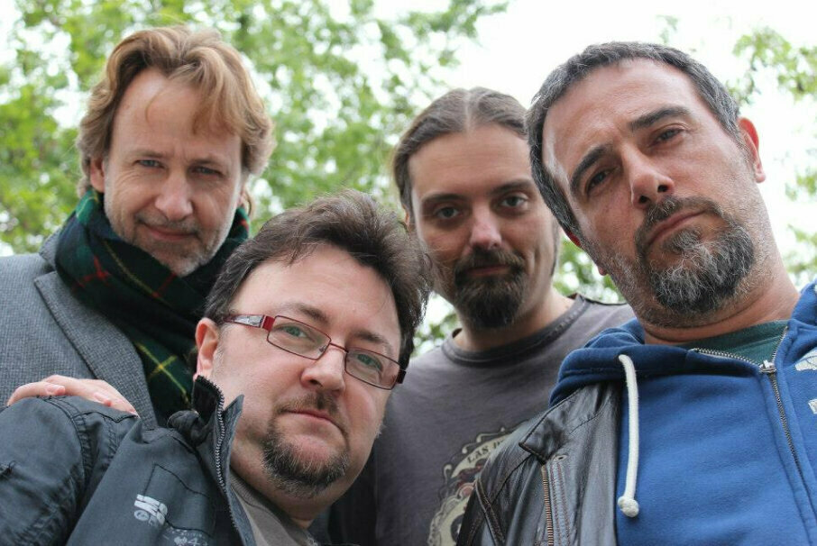

Presentació
Aquesta pàgina web mostra la trajectòria de la banda de rock barcelonina Duran&Cia, formada l'any 2004.
S'hi pot trobar un llistat dels treballs fets per la banda, que inclouen un CD amb 10 temes, un EP amb 5 temes i un videoclip promocional, tots ells autoproduïts i que es pot consultar detalladament cadascun d'aquests treballs a partir del llistat.
També s'hi pot trobar una pàgina amb vídeos de Youtube d'algunes cançons en directe enregistrades en alguna de les actuacions fetes pel grup.
Finalment, a la pàgina d'enllaços es pot consultar les fonts utilitzades per a la realització dels continguts així com un avís legal referent a lús de la pàgina web.
Una mica d’història
Quan Carlos Duran (front-man i ànima de Caras Raras) es troba amb Carles Melgarejo (excomponent de Barrock, Tradivàrius i Sòviets i component del grup de versions Hot Rocks), Franck Castillo (excomponent de Tradivàrius i Sòviets i component de Lipstick) i Xavi Oró (excomponent de Barrock, Tradivàrius i Sòviets i component de Coriolà i del grup de versions Hot Rocks), gràcies a Quimo Benavent (cantant de Sòviets), es tanquen a la seva destil·leria particular per elaborar una selecta mixtura carregada de lletres intel·ligents, divertides i crítiques, molt rock & roll i pinzellades diverses de l'extensa paleta nodrida en les experiències musicals i vitals anteriors dels seus heterodoxos integrants (pop, progressiu, funk, folk-rock).
Han realitzat diverses actuacions a sales del circuit de rock de Barcelona i han enregistrat dos treballs discogràfics disponibles a Amazon, Amazon Music i a Spotify i un videoclip promocional.
Duran&Cia són:
Carlos Durán
Veu i piano
Carles Melgarejo
Guitarres elèctriques i acústiques, harmònica i veus
Xavi Oró
Baix i veus
Franck Castillo
Bateria